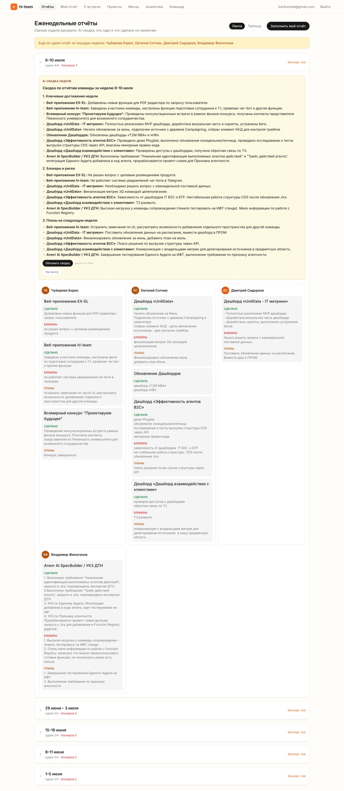
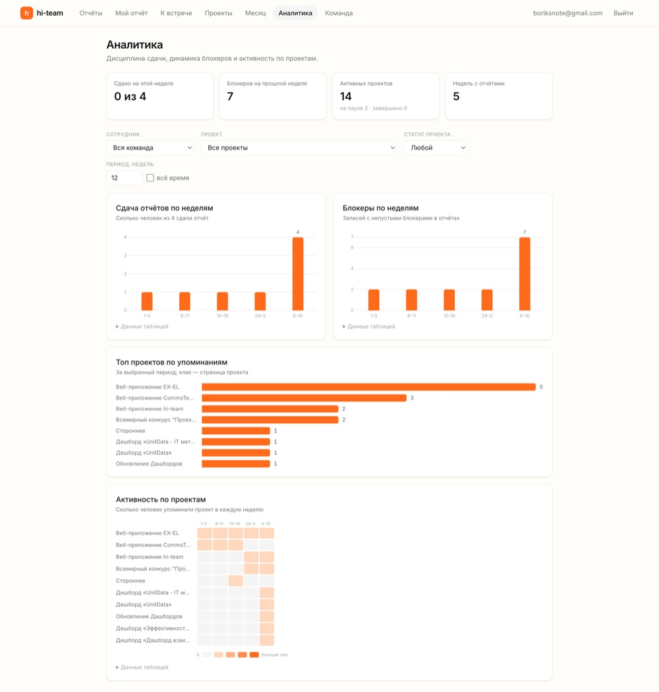
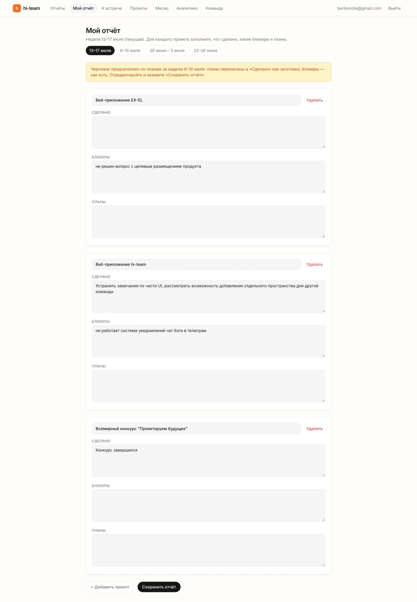
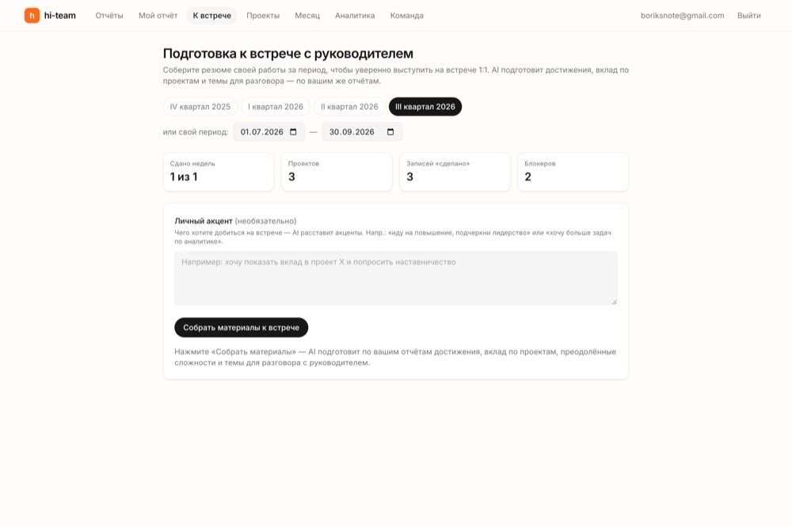
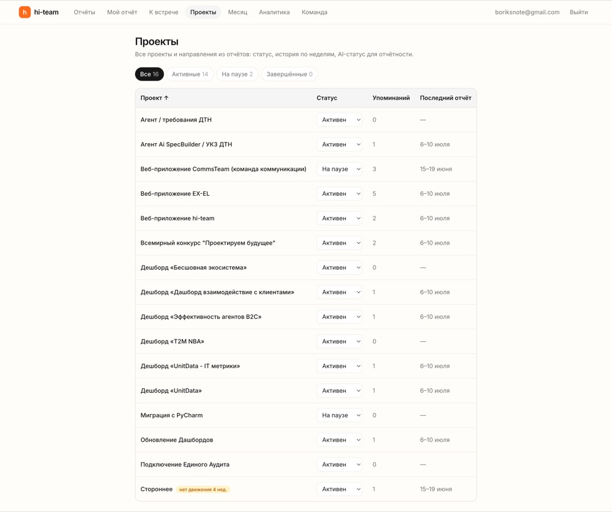

Каждый пишет коротко — Проект → Сделано · Блокеры · Планы. hi-team собирает это в дашборд, а встроенный ИИ делает сводку недели для руководителя. Замена таблице в Confluence.
Веб-приложение · роли и доступ · Telegram-бот · аналитика · авто-напоминания
hi-team превращает разрозненные апдейты в структуру, которую видит вся команда и по которой ИИ собирает выжимку наверх.
Коротко по каждому проекту: что сделано, блокеры, планы. Форма подсказывает названия проектов и предзаполняет черновик из прошлой недели. Можно прямо из Telegram — одним сообщением.
OpenRouter превращает разрозненные записи в деловую выжимку недели: достижения, риски, висящие блокеры. Все вызовы — на сервере, ключ не уходит в браузер.
Дашборд неделя × сотрудники, кто не сдал, AI-сводка, статусы проектов и аналитика дисциплины и блокеров. Экспорт в Markdown и итоги месяца — для отчёта наверх.
Реальный интерфейс hi-team с данными команды: дашборд с AI-сводкой, аналитика, форма отчёта, подготовка к 1:1 и проекты.

Кто что сделал по проектам, кто не сдал, деловая выжимка недели для руководителя — на одном экране.

Сдача по неделям, динамика блокеров, топ и активность проектов — фактура для разговоров о команде.

Проект → сделано / блокеры / планы. Черновик предзаполнен из прошлой недели, названия проектов подсказываются.

Пресеты кварталов, факты-плитки за период и личный акцент — AI соберёт достижения и темы для разговора.

Активные / на паузе / завершённые, число упоминаний и последний отчёт. Бейдж «нет движения» — на потерянные.
Права и ожидания настроены так, что руководитель не заполняет отчёты, но управляет, а сотрудник не тонет в администрировании.
Таблица неделя × сотрудники, кто ещё не сдал, экспорт в Markdown. Вся команда — на одном экране.
Деловая выжимка для руководителя за секунды. Учитывает блокеры прошлых недель и помечает висящие.
Статусы (активен / пауза / завершён), история по неделям, AI-статус наверх, слияние дублей. Бейдж «нет движения».
Дисциплина сдачи, динамика блокеров, топ и активность проектов — фактура для разговоров о команде.
Личный инструмент сотрудника: AI собирает достижения, рост и «что обсудить с руководителем» за квартал.
Отчёт одним сообщением из чата — ИИ структурирует по проектам, ты подтверждаешь. Плюс /status и напоминания.
Агрегация недельных сводок и отчётов за месяц + выгрузка в Markdown — для отчётности наверх.
AI-выжимку недели можно отправить письмом — через SMTP-почту команды, на любой адрес.
Напоминание не сдавшим по четвергам, авто-сводка по пятницам. Каналы — Telegram и/или webhook.
Вход по email + паролю, allowlist в базе, три роли с точными правами. Секреты — только в окружении.
Serverless-архитектура на Vercel, типобезопасность на TypeScript, все AI-вызовы — на сервере.
Отчёты, дашборд, AI-сводки недели и месяца, проекты, роли и доступ, Telegram-бот, аналитика, подготовка к 1:1, cron-напоминания.
Отправка AI-выжимки письмом через SMTP команды — без привязки к домену, на любой адрес получателя.
Дашборды динамики блокеров и активности проектов, rate-limit на AI-роуты, Q&A-чат по истории отчётов.
hi-team держит еженедельную ритмику команды в одном месте: коротко пишет каждый, ясную картину получает руководитель.